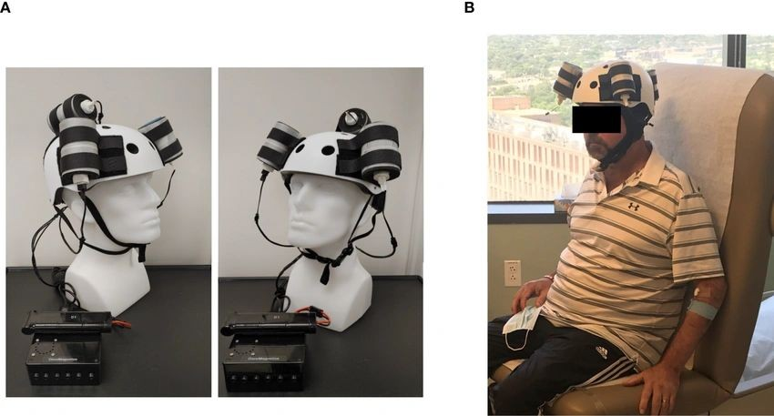

Medical devices
OncoMagnetics
Biotex
Mechanical development of a wearable platform using rotating magnets for investigational glioblastoma treatment.
Read more
At Biotex, I help develop and test a wearable helmet that uses rotating permanent magnets to produce oscillating magnetic fields. The device is being studied as a possible treatment for glioblastoma.
My work includes mechanical design, building prototypes, fitting components, checking tolerances, and bench testing. I help investigate vibration and noise from the rotating assemblies and test design changes to improve reliability and comfort.
Read related paper